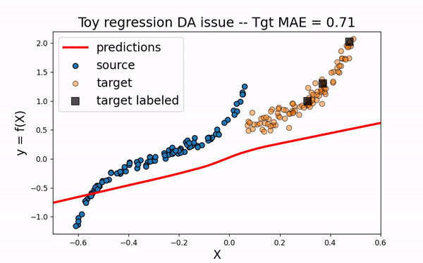
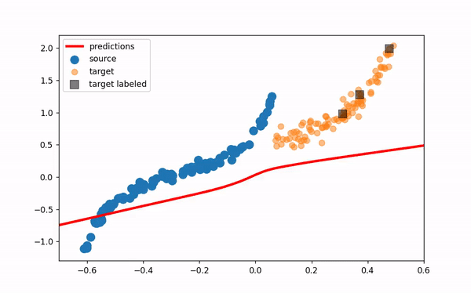

Toy Regression
You will find here the application of DA methods from the ADAPT package on a simple one dimensional DA regression problem.
First we import packages needed in the following. We will use matplotlib Animation tools in order to get a visual understanding of the selected methods:
[1]:
import numpy as np
import matplotlib.pyplot as plt
import matplotlib.animation as animation
from matplotlib import rc
rc('animation', html='jshtml')
Experimental Setup
We now set the synthetic regression DA problem using the make_regression_da function from adapt.utils.
[2]:
from adapt.utils import make_regression_da
Xs, ys, Xt, yt = make_regression_da()
tgt_index_lab_ = np.random.choice(100,3)
Xt_lab = Xt[tgt_index_lab_]; yt_lab = yt[tgt_index_lab_]
We define here a show function which we will use in the following to visualize the algorithms performances on the toy problem.
[3]:
def show(ax, y_pred=None, X_src=Xs, weights_src=50, weights_tgt=100):
ax.scatter(X_src, ys, s=weights_src, label="source", edgecolor="black")
ax.scatter(Xt, yt, s=50, alpha=0.5, label="target", edgecolor="black")
ax.scatter(Xt_lab, yt_lab, s=weights_tgt,
c="black", marker="s", alpha=0.7, label="target labeled")
if y_pred is not None:
ax.plot(np.linspace(-0.7, 0.6, 100), y_pred, c="red", lw=3, label="predictions")
index_ = np.abs(Xt - np.linspace(-0.7, 0.6, 100)).argmin(1)
score = np.mean(np.abs(yt - y_pred[index_]))
score = " -- Tgt MAE = %.2f"%score
else:
score = ""
ax.set_xlim((-0.7,0.6))
ax.set_ylim((-1.3, 2.2))
ax.legend(fontsize=16)
ax.set_xlabel("X", fontsize=16)
ax.set_ylabel("y = f(X)", fontsize=16)
ax.set_title("Toy regression DA issue"+score, fontsize=18)
return ax
[4]:
fig, ax = plt.subplots(1, 1, figsize=(8, 5))
show(ax=ax)
plt.show()

As we can see in the figure above (plotting the output data y with respect to the inputs X), source and target data define two distinct domains. We have modeled here a classical supervised DA issue where the goal is to build a good model on orange data knowing only the labels (y) of the blue and black points.
We now define the base model used to learn the task. We use here a neural network with two hidden layer. We also define a SavePrediction callback in order to save the prediction of the neural network at each epoch.
[5]:
import tensorflow as tf
from tensorflow.keras import Sequential
from tensorflow.keras.layers import Input, Dense, Reshape
from tensorflow.keras.optimizers import Adam
def get_model():
model = Sequential()
model.add(Dense(100, activation='elu', input_shape=(1,)))
model.add(Dense(100, activation='relu'))
model.add(Dense(1))
model.compile(optimizer=Adam(0.01), loss='mean_squared_error')
return model
[6]:
from tensorflow.keras.callbacks import Callback
class SavePrediction(Callback):
"""
Callbacks which stores predicted
labels in history at each epoch.
"""
def __init__(self):
self.X = np.linspace(-0.7, 0.6, 100).reshape(-1, 1)
self.custom_history_ = []
super().__init__()
def on_epoch_end(self, batch, logs={}):
"""Applied at the end of each epoch"""
predictions = self.model.predict_on_batch(self.X).ravel()
self.custom_history_.append(predictions)
TGT Only
First, let’s fit a network only on the three labeled target data. As we could have guessed, this is not sufficient to build an efficient model on the whole target domain.
[7]:
np.random.seed(0)
tf.random.set_seed(0)
model = get_model()
save_preds = SavePrediction()
model.fit(Xt_lab, yt_lab, callbacks=[save_preds], epochs=100, batch_size=64, verbose=0);
[8]:
def animate(i, *fargs):
ax.clear()
y_pred = save_preds.custom_history_[i].ravel()
if len(fargs)<1:
show(ax, y_pred)
else:
show(ax, y_pred, **fargs[0])
[1]:
fig, ax = plt.subplots(1, 1, figsize=(8, 5))
ani = animation.FuncAnimation(fig, animate, frames=100, blit=False, repeat=True)
[1]:
ani

Src Only
We would like to use the large amount of labeled source data to improve the training of the neural network on the target domain. However, as we can see on the figure below, using only the source dataset fails to provide an efficient model.
[11]:
np.random.seed(0)
tf.random.set_seed(0)
model = get_model()
save_preds = SavePrediction()
model.fit(Xs, ys, callbacks=[save_preds], epochs=100, batch_size=100, verbose=0);
[2]:
fig, ax = plt.subplots(1, 1, figsize=(8, 5))
ani = animation.FuncAnimation(fig, animate, frames=100, blit=False, repeat=True)
[2]:
ani

All
Same thing happen when using both source and target labeled data. As the source sample ovewhelms the target one, the model is not fitted enough on the target domain.
[14]:
np.random.seed(0)
tf.random.set_seed(0)
model = get_model()
save_preds = SavePrediction()
model.fit(np.concatenate((Xs, Xt_lab)),
np.concatenate((ys, yt_lab)),
callbacks=[save_preds],
epochs=100, batch_size=110, verbose=0);
[3]:
fig, ax = plt.subplots(1, 1, figsize=(8, 5))
ani = animation.FuncAnimation(fig, animate, frames=100, blit=False, repeat=True)
[4]:
ani

CORAL
Let’s now consider the domain adaptation method CORAL This “two-stage” method first perfroms a feature alignment on source data and then fit an estimator on the new feature space.
[17]:
from adapt.feature_based import CORAL
save_preds = SavePrediction()
model = CORAL(get_model(), lambda_=1000., random_state=0)
model.fit(Xs.reshape(-1, 1), ys, Xt,
callbacks=[save_preds], epochs=100, batch_size=110, verbose=0);
Covariance Matrix alignement...
Previous covariance difference: 0.024858
New covariance difference: 0.000624
Fit estimator...
[4]:
fig, ax = plt.subplots(1, 1, figsize=(8, 5))
X_transformed = model.predict_features(Xs.reshape(-1, 1), domain="src").ravel()
ani = animation.FuncAnimation(fig, animate, frames=100, blit=False, repeat=True,
fargs=(dict(X_src=X_transformed),))
[5]:
ani

As we can see. when using CORAL method, source input data are translated closer to target data. However, for this example, this is not enough to obtain a good model on the target domain.
TrAdaBoostR2
We now consider an instance-based method: TrAdaBoostR2. This method consists in a reverse boosting algorithm decreasing the weights of source data poorly predicted at each boosting iteraton.
[20]:
from adapt.instance_based import TrAdaBoostR2
model = TrAdaBoostR2(get_model(), n_estimators=30, random_state=0)
save_preds = SavePrediction()
model.fit(Xs.reshape(-1, 1), ys, Xt_lab, yt_lab,
callbacks=[save_preds], epochs=100, batch_size=110, verbose=0);
Iteration 0 - Error: 0.5000
Iteration 1 - Error: 0.5000
Iteration 2 - Error: 0.5000
Iteration 3 - Error: 0.5000
Iteration 4 - Error: 0.5000
Iteration 5 - Error: 0.5000
Iteration 6 - Error: 0.5000
Iteration 7 - Error: 0.5000
Iteration 8 - Error: 0.5000
Iteration 9 - Error: 0.5000
Iteration 10 - Error: 0.5000
Iteration 11 - Error: 0.5000
Iteration 12 - Error: 0.5000
Iteration 13 - Error: 0.5000
Iteration 14 - Error: 0.5000
Iteration 15 - Error: 0.5000
Iteration 16 - Error: 0.4443
Iteration 17 - Error: 0.4412
Iteration 18 - Error: 0.3904
Iteration 19 - Error: 0.3342
Iteration 20 - Error: 0.2935
Iteration 21 - Error: 0.2071
Iteration 22 - Error: 0.1451
Iteration 23 - Error: 0.0569
Iteration 24 - Error: 0.0438
Iteration 25 - Error: 0.0251
Iteration 26 - Error: 0.0243
Iteration 27 - Error: 0.0221
Iteration 28 - Error: 0.0202
Iteration 29 - Error: 0.0170
[21]:
def animate_tradaboost(i):
ax.clear()
i *= 10
j = int(i / 100)
y_pred = save_preds.custom_history_[i].ravel()
weights_src = 10000 * model.sample_weights_src_[j]
weights_tgt = 10000 * model.sample_weights_tgt_[j]
show(ax, y_pred, weights_src=weights_src, weights_tgt=weights_tgt)
[5]:
fig, ax = plt.subplots(1, 1, figsize=(8, 5))
ani = animation.FuncAnimation(fig, animate_tradaboost, frames=299, blit=False, repeat=True)
[6]:
ani

As we can see on the figure above, TrAdaBoostR2 perfroms very well on this toy DA issue! The importance weights are described by the size of data points. We observe that the weights of source instances close to 0 are decreased as the weights of target instances increase. This source instances indeed misleaded the fitting of the network on the target domain. Decreasing their weights helps then a lot to obtain a good target model.
RegularTransferNN
Finally, we consider here the paremeter-based method RegularTransferNN. This method fits the target labeled data with a regularized loss. During training, the mean squared error on target data is regularized with the euclidean distance between the target model parameters and the ones of a pre-trained source model.
[24]:
from adapt.parameter_based import RegularTransferNN
np.random.seed(0)
tf.random.set_seed(0)
save_preds = SavePrediction()
model_0 = get_model()
model_0.fit(Xs.reshape(-1, 1), ys, callbacks=[save_preds], epochs=100, batch_size=110, verbose=0);
model = RegularTransferNN(model_0, lambdas=1.0, random_state=0)
model.fit(Xt_lab, yt_lab, callbacks=[save_preds], epochs=100, batch_size=110, verbose=0);
[6]:
fig, ax = plt.subplots(1, 1, figsize=(8, 5))
ani = animation.FuncAnimation(fig, animate, frames=200, blit=False, repeat=True)
[8]:
ani